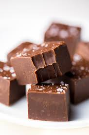

Fudge

Smooth Sea Salt Fudge
With just a few ingredients and a whole lot of stirring you can make this delightfully easy fudge that will have your guests asking for the recipe!
It's silky smooth and so adaptable that it can be topped with nearly any chopped candy or nuts you can think of,
but for this recipe we'll top with sea salt just to show that even without walnuts and toffee bits, this fudge is flawless.
Ingredients
- 1 (14oz) can sweetened condensed milk
- 2 cups semisweet chocolate chips
- 1 cup milk chocolate chips
- 1/4 tsp vanilla extract
- 1 tsp sea salt
Steps
- Prepare a 9x9 pan with aluminum foil or parchment paper to ensure easy removal.
- Mix semisweet and milk chocolate chips with condensed milk over low heat.
- Stir constantly, scraping sides and bottom to ensure even mixing and prevent clumping.
- Briefly remove from heat and add vanilla extract before returning to stovetop and continuing stirring.
- Stir until mixture pulls from sides of pot and appears smooth.
- Pour fudge into prepared pan, using a spatula to press the fudge into the corners and edges of the pan until it is evenly distributed.
- Tap pan atop the table several times to help set the fudge evenly.
- Sprinkle sea salt evenly overtop to taste.
- Chill fudge in fridge for 1-2 hours until set before cutting into 1 inch squares.
- Enjoy!
Tip:For best results store in the fridge!